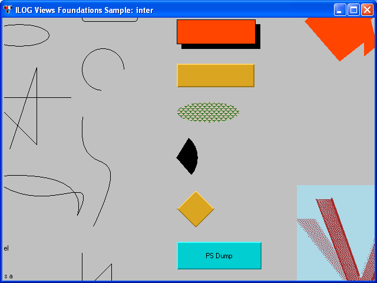

interDisplaying and interacting with graphic objects.
Shows the use of graphic objects and behaviors.
Click the left mouse button to move objects, and the middle
mouse button to change their size.
Pressing the [Dump PS] button creates a
PostScript dump file of the visible area, in a file called
"dump.ps".
IlvGraphicIlvContainerhullUsing IlPool in a recursive algorithm.
The convex hull of a set of points is computed and dynamically
updated.
Because the algorithm is recursive, we use the Rogue Wave Views
Pools mechanism to allocate and release the memory blocks that
are needed.
IlPoolOf